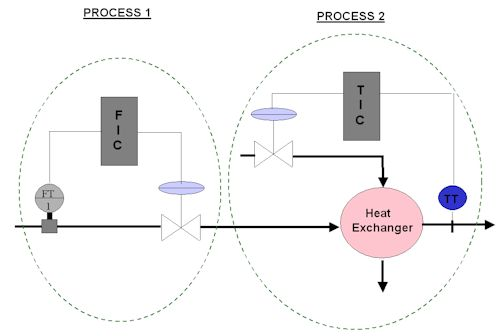
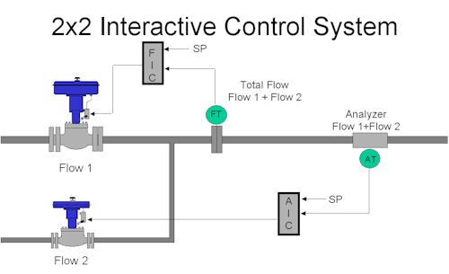
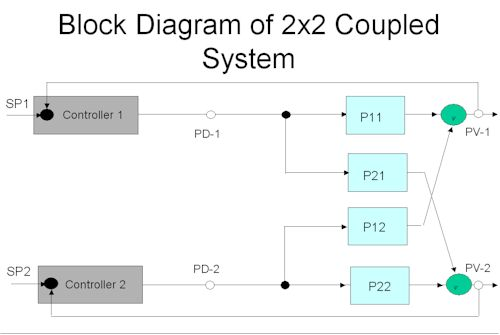
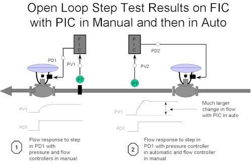
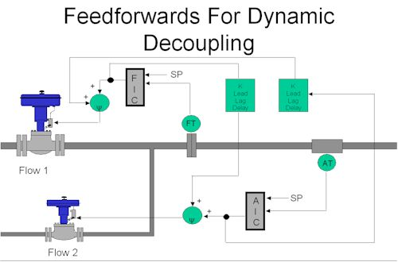
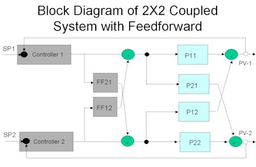
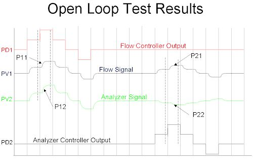

|
| [Home] [About us] [Contact us] [Training] [Optimisation services] [Protuner] |
| [Loop signatures] [Case histories] [Continuous loop performance monitoring] |
|
Loop Problem Signatures Part 2 5. Interactive Control Systems Feedforward control was explained in the previous loop signature articles. One of the examples used was feedforward control of load changes on a heat exchanger when variations occurred in the flow of the process fluid through the exchanger. A change of flow of the process fluid affects the temperature, and it was shown how feedforward control could immediately compensate for such a load change, and in fact, if it could be perfectly applied, it would operate with zero variance. Figure 1 shows a similar heat exchanger. In this case there is a flow control loop upstream of the exchanger, which could regulate the flow of the process liquid through the exchanger. The loop has been labelled in the dotted boundary line as Process 1. The actual temperature control loop in the exchanger has been labelled Process 2. Now if Process 1 changes and the flow changes, it will have an effect on Process 2. It is said that Process 2 is "coupled" by Process 1.  Figure 1 If we then play around with the steam valve in Process 2, it can have no effect on Process 1, the process fluid flow. Therefore Process 2 does not couple Process 1. The system is referred to as a "1 x 2 coupled system". Now have a look at Figure 2. Here two flows are joined together, the one being a product, and the other some sort of reagent to adjust some chemical property of the product. Let us say it is pH, which would be typical. There are two control loops in the system. The first, Process 1, measures and controls the total flow of the combined product and reagent leaving the system, and the second, Process 2, measures and controls the pH of the mixture. Now it is fairly obvious that if the valve of Process 1 changes, it will affect both the total flow and the pH. Similarly a change of the valve in Process 2 will also affect both the total flow and the pH.  Figure 2 When two processes have a mutual affect on each other like this, they are coupled in both directions, and it is said that they are interactive. A system with like this one is referred to as a "2 x 2 interactive system". In general, interactive systems will tend to "fight" each other, particularly if both loops operate at the roughly the same speed. A very good measure of the loop speed is the ultimate period. It may be remembered that in the first Loop Signature series, now available on CD, it was shown in Loop Signature 22, that when a repetitive disturbance having a period between 0.2 and 6 times a feedback loop's ultimate period, interferes with the loop, the control variance is worse in automatic than manual. Loops that are very interactive generally have similar ultimate periods. When we dealt with a 1 x 2 coupled system in the previous Loop Signature articles, we referred to the one process as "the process", and the other as the "load". This will not make much sense in an interactive system where we have two definite processes. Each of them could be referred to as the load on the other. Therefore we refer to the transfer functions of each process and each "load" on the other as "couplers". In the block diagram shown in Figure 3, it can be seen how much easier to understand how the system works with the various couplers. PV1 is coupled by both PD1 and PD2 through couplers referred to as P11 and P12 respectively, and similarly PV2 is coupled by both PD2 and PD1 through couplers referred to as P22 and P21 respectively.  Figure 3 It must be realised that systems may interact with varying degrees of intensity. For example let us imagine that Flows 1 and 2 in Figure 1 were in pipes of the same diameter, and were of comparable flow volumes. In this case the system would be highly interactive. A change in either valve would have a significant affect on the other's PV as well as on its own. However in reality, as in the case of pH control, the reagent is usually supplied in a pipe much smaller than the process flow's, and the volume through the reagent's valve is relatively tiny compared with the process flow. In such a case a change in the flow of reagent will have a large effect on the pH (Process 2), but will have a very small effect on the total flow (Process 1). Conversely a change in Process 1's valve will have a significant effect on both the total flow and pH. This latter case would not present such a difficult control problem as the first case where the system is very interactive. It is therefore quite important to first establish the degrees of interaction between the processes. This can be accomplished simply in practice by putting both loops into manual, and then to step each PD alternatively, keeping the other one constant. (Just out of interest, the scientific way of establishing the degree of interaction is by using something called "a relative gain array". However, in practice, it is easier to use one's intelligence when dealing with a simple thing like a 2x2 coupled system.). Interactive loops of various complexities are encountered very often in many types of plant. However one does find many interactive loops in particular plant types like boilers and distillation columns. Here many loops in different sections of the plant may interact. In fact in some cases it is so bad that if good control is required it becomes imperative to use advanced control techniques to decouple the interactive loops. One such technique is multi-variable control. The basics of this will be discussed a little later. In most plants one often does encounter interactive loops. Examples of loops like this are the one shown in Figure 2, and another very common one is where a flow of a gas or steam first passes through a pressure control valve to control the downstream pressure, and then it passes through a flow control valve, as is often found in the case of steam or gas headers. Such a system is shown in Figure 4. In most of these cases it would be uneconomic to purchase an advanced control scheme just to sort out these few loops. Therefore one generally tries to minimise the interaction by tuning. The technique for this will be discussed first.  Figure 4 Decoupling by Tuning Operators through the ages have quickly found that the best way to decouple interactive loops is to place one or more of them if necessary, into manual. They then can't fight each other any more. This is in fact the ultimate method of decoupling. Unfortunately feedback control cannot deal effectively with interactivity. As mentioned earlier, if two or more loops are in a configuration where interaction can occur, and if they have similar ultimate periods, they will "fight" each other. We are going to discuss a 2 x 2 interactive system. The only thing one can do to try and do to decouple the two loops by tuning is to make them respond at different speeds. Therefore the one loop has to be tuned fast and the other slowly. Remember that the slower a loop is tuned, the more we are tending to tune it into manual, which could be said to be the eventual ultimate slow tune. One of the problems associated with interactive loops of which people are often not aware, is that the dynamics of each loop will change if the other loop is in automatic or in manual. To illustrate this refer again to Figure 4, which shows two potentially highly interactive control loops. High-pressure gas flows down a line. It passes firstly though a flow control loop to reduce the pressure to a useable level, and then secondly it goes through a flow control loop to keep the flow constant. As mentioned earlier, this is a fairly common arrangement often seen in plants, particularly when there are several flow loops being taken off a header. The loops can become very interactive if there is insufficient capacity in the line between the two valves to allow pressure and or flow changes to occur fairly slowly. It can be seen in the figure if that an open loop step test is performed on the flow loop with the pressure controller (PIC) in manual, the PV responds as shown in Note 1. However if PIC is in automatic there will be a completely different response when the test is repeated on the flow loop as seen in Note 2. This means that really each loop has to be tuned with the other loop in automatic. It also means that if both loops are in automatic, and one is placed in manual, the other's response will change, getting either more sluggish or else faster; possibly instability could even occur. The procedure for trying to decouple by tuning is as follows: (Reference is made to the system shown in Figure 2). 1. Decide which loop must be the fastest, say FIC in this case 2. Place both loops in manual, do normal analysis, and determine initial tuning for both 3. With FIC in auto, and AIC in manual, determine new tuning for AIC 4. With AIC in auto, put FIC into manual and retune it 5. If necessary slow down AIC even further with an input filter (maximum TC should not exceed 10 x DT of analyser loop) 6. Then repeat last 2 steps This is all that can be done to decouple interactive loops by tuning. In reality one can get away with this type of approach in many cases. However in certain cases where the controls are very important, and possibly very interactive, a more drastic measure must be employed. This is known as dynamic decoupling, and is basically feedforwarding the changes occurring in each loop across to the other, as illustrated in Figure 5.  Figure 5 Figure 6 shows in a more easily understandable block diagram format. The feedforward modules FF12 and FF21 are referred to as "decouplers".  Figure 6 The procedure to perform the tests needed to establish the transfer functions of the couplers and then to tune the decouplers, employs exactly the same techniques as shown in the preceding Loop Signature articles on feedforward. The tests are conducted as follows: Referring to Figure 7, one records the response on both loops to step changes made on the outputs of each loop, one being changed at a time.  Figure 7 We now have the information to establish the following four transfer functions, which follow the exact simple procedures as described in Loop Signature P2-3: 1. P11 (PD1 vs. PV1) The gain, the time constant, and the deadtime of each transfer function can then be determined by either simple graphical analysis or by using an analyser like the Protuner. FF12 = P12/P11 FF21 = P21/P22 The huge advantages of using dynamic decoupling are:
One can employ exactly the same techniques to decouple more complex systems like 3 x 3 systems. One of the delegates on one of our courses in the United Kingdom who worked for a large steel company actually used these methods to decouple a 4 x 4 coupled system. It worked so successfully that he wrote a paper on it in a steel journal in Britain. However I personally think that when it starts getting to such complexities it may be worth while to invest in a commercially available advanced multivariable control system. Michael
Brown is a specialist in control loop optimisation, with many years of
experience in process control instrumentation. His main activities are
consulting, and teaching practical control loop analysis and
optimisation. He gives training courses which can be held in clients'
plants, where students can have the added benefit of practising on live
loops. His work takes him to plants all over South Africa, and also to
other countries. He can be contacted at:
|